Week 4
For this weeks project our focus was to create a logo based on a hypothetical company that you are either working for or own. My theme has to do with media and other production oriented work. With that being said I kinda of went all over the place with my design. First, I was thinking to do something related to my name, then I was thinking about a simple clever design that was abstract but also was clean and modern, then I focused on potential animals that could fit the vibe of my work. From their I was able to choose the Grizzly Bear as my animal and was able to construct a simple and effective line art logo of a bear along with using framing techniques to enclose my brand name "Grizzly Media".
1. Sketches
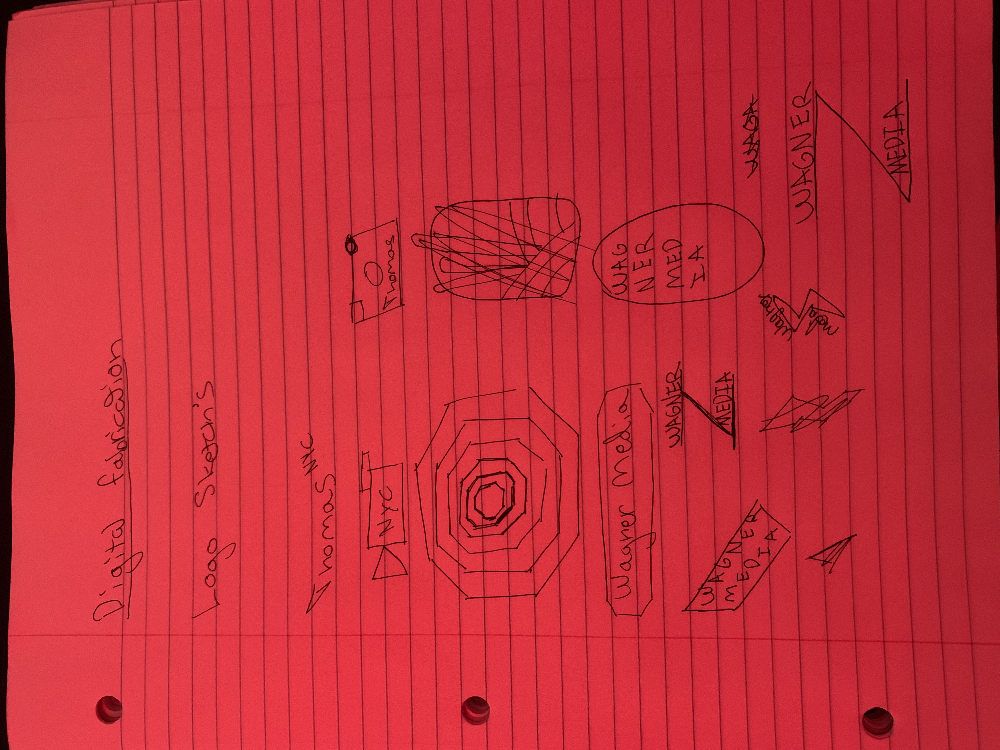First step to creating my logo, I needed to sketch. As you can tell I took the work "Sketch" to new extremes. They are rough but they were helpful in helping me get to the eventual final product that you will eventually see later in this documentation of my work.
2. Moving to Adobe Illustrator
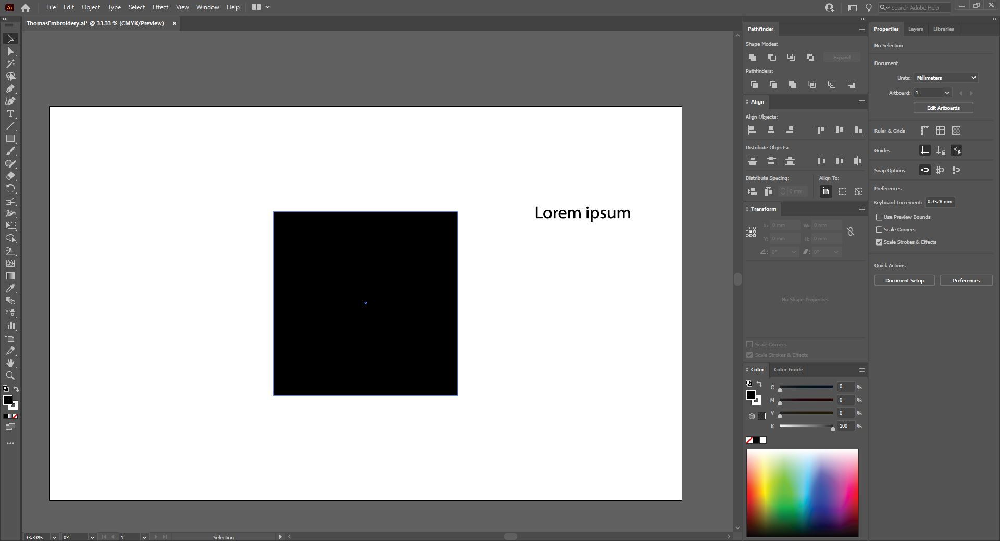Now that I was in Adobe Illustrator I started playing around with different shapes, tools, and techniques that I either knew or were suggested to me through the Professors videos. This took a long time, I went in so many different directions but finally found my flow and inspiration to try and create what I wanted.
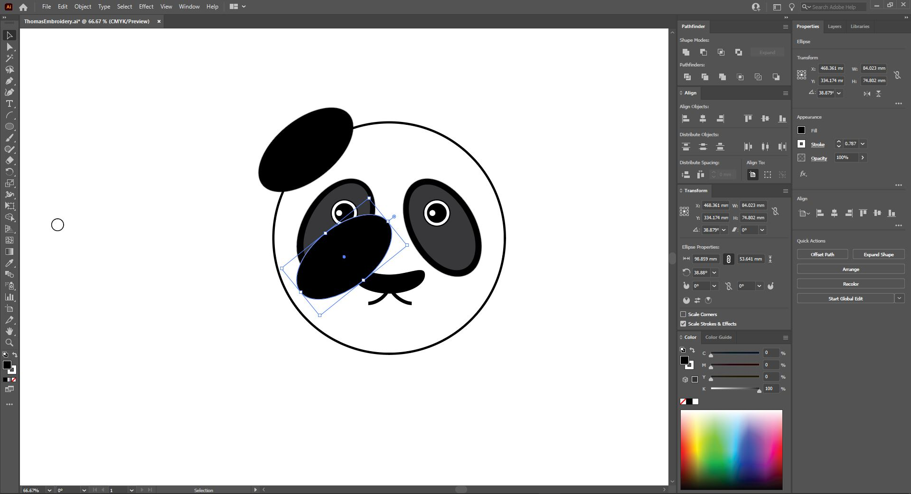Moving forward I thought that I wanted to go with a Panda with the hopes to come up with a name to the effect of "Bamboo Pictures" or something like that. This did not last and I quickly changed directions.
3. Second Version
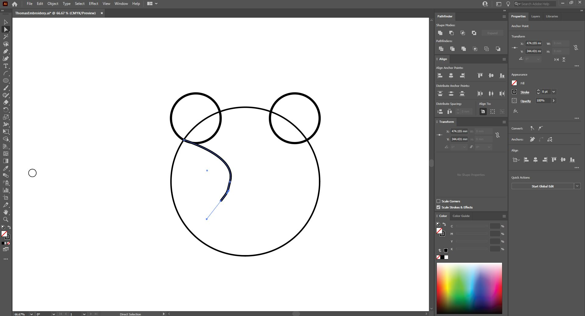From here we see the beginnings of the final version, a grizzly bear. Here I was experimenting with line segments and using the direct select tool in order to curve and move the line segments that I made.
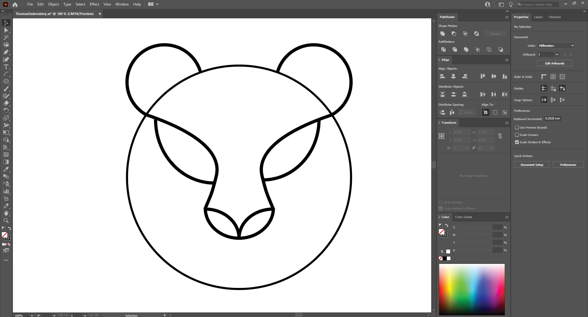Now I had the basic structure of the bear using very simple strokes and shapes. But as you can probably tell. It is quite rough and needs to be corrected. Using different aligning tools and selecting tools I was able to orient and re-align the lines and curves apart of this drawing.
4. Framing Elements
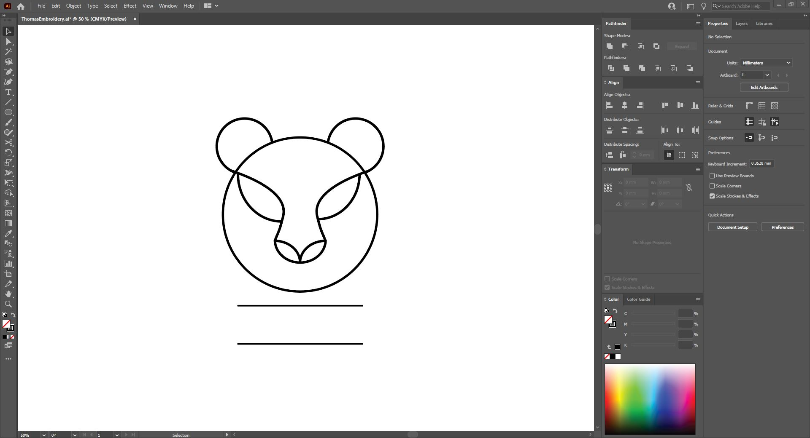Here we can see me moving forward with the design. At this point I thought that I was done and that my design was at a point where there wasnt anything else that needed to be added. That being said I moved forward and began adding the framing elements in order to frame my text for my brand name.
Using the scissor tool I cut a section of the top line to make it look like the frame is behind the bear creating depth.
5. Adding some color
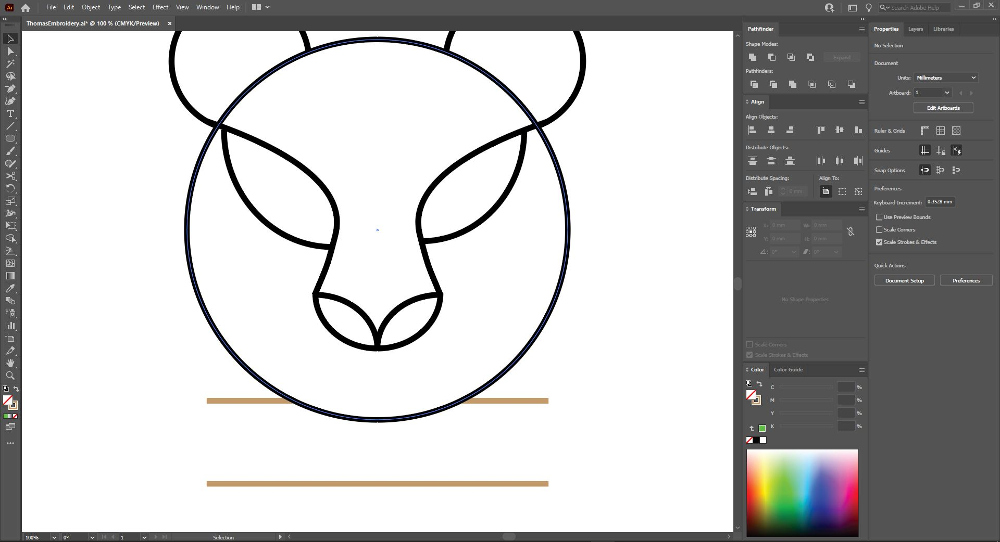Now that I had my framing element where I wanted it, I needed to add some color. I wanted to keep the actual logo (the bear) to be black and white while having the frame a seperate color. Therefore I changed the black stroke of the frame from black to gold.
To clarify, I made sure to make all line segments and text strokes to be 8.
6. Choosing a font
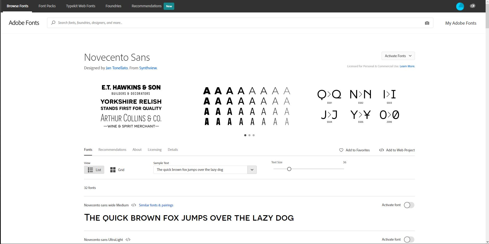Since I have access to all adobe services I made my way to Adobe Fonts to find a font that fit my design. Here I decided to choose Novecento Sans.
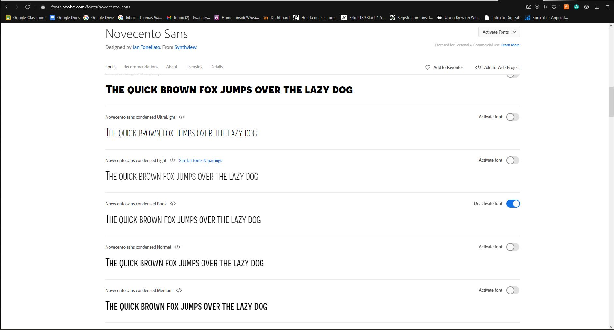I decided to go with the Novecento Sans condensed Book version.
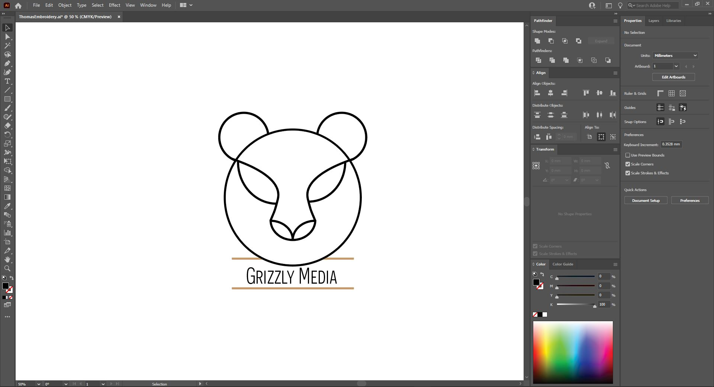Here is the text aligned in the frame.
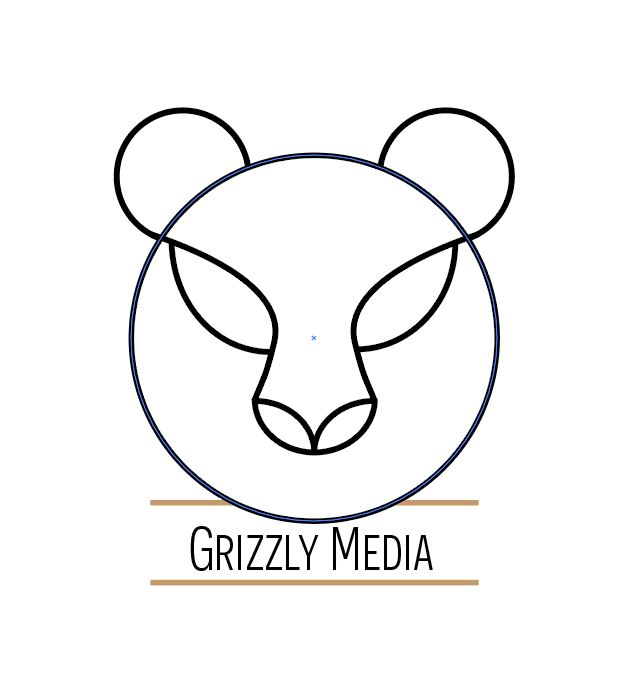Semi final Product
7. Trying to choose
After finishing the framing and text, I felt that something was missing so I experimented.
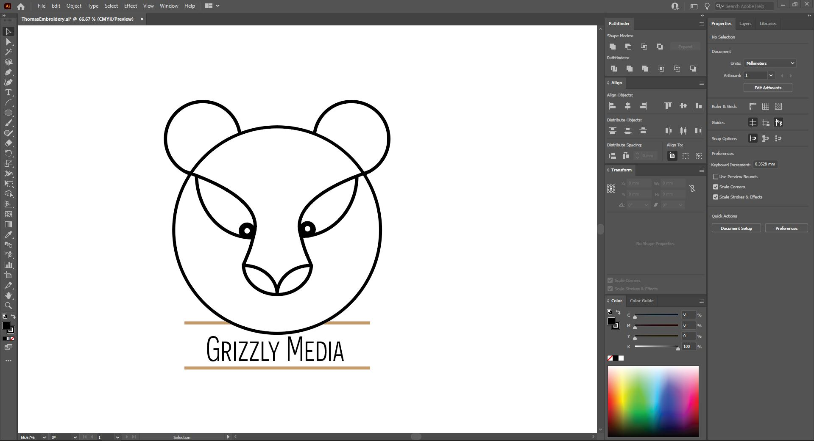8. New Pages - Weeks 1-15
My conversation with Matt was not only helpful for solving my picture problems, but it also helped me solve the last of my big hurdles. I did not yet know how to make new pages, one for each week, which would then be linked by "Weeks" dropdown menu.
Having seen several other people's Brackets pages, and now having talked with Matt, I had an idea what the end product should look like, with my index.html on the left and a list of weeks pages below. But it was only after I experimented with adding an images folder that I realized the easiest way to accomplish this. I went "File -> New" then after making a new page, I went "File -> Save As" and saved the new page to the "BESTDaltonAdams.github.io" folder. This process was repeated 15 times, one for each of the standard weeks in a full semester (though we will not have 15 weeks' worth of material in this class).


9. Connecting the Pages
Taking what I had learned when altering the template the first time, I was able to quickly trim down the template to leave only what I needed within each week's page. I then copied and pasted that new template to each page. It was at this point, however, that I realized that none of the pages were linked together. Linking each week in the homepage dropdown was easy, simply going through the process of linking a URL but instead linking that week's folder. This was also made easier by using the already pre-made buttons as part of the original template.
The bigger problem came when linking the buttons of each week's toolbar to the homepage, since those buttons link to specific sections of the homepage, which was now a completely separate page. Solving this required a google search, which yielded the below solution. By copying this, I was able to successfully finish all of my links for all of the pages.

10. Third Push
At this time, I had accomplished a lot on my own, but another day's work had come to an end. I still needed to finish some cosmetic problems on the homepage and work on my "Week 1," but that would have to wait. I pushed my most recent work and test to make sure all of my interlinkings worked and that my template alterations in Weeks 1-15 had not had any errors.


11. Final Cosmetics
At this point, my website was nearly done. The skeleton was fully finished, but it was time to finish the skin. I was able to finish some of these final touches by myself, such as replacing placeholder images with the final ones. I did have two problems that required help. The first was getting my "About Me" text to be left set. After talking with Madison, we realized it was a formatting issue with the container which was a base setting from the original template. After comparing to other left set containers within the template, I was able to resolve the issue. The second issue was adding text over the lower left of an image, which reqired Kevin's help. After attempting to write our own CSS code and failing, we instead altered some of the w3schools code from a button which was over an image. With Kevin's help, we were easily able to convert that to being text over an image instead of a button over an image.
The results of these final cosmetic changes can be seen below. My homepage is now complete, though sections of it will be updated every week (if I remember). Now onto the last step for this week...


12. Getting meta and and beyond
It is at this part of the process that I say goodbye to week one. In this last step I am making the very page that you are reading now (please play mind being music in your internal monologue). This has been quite simple since in reality it is only a couple of headers, some paragraphs, and some images.
Now we go beyond meta - After this Week 1 page is finished, a future me (oh, the infinite possibilities) will put all of this in Grammarly and make sure that no major grammatical errors remain in my final project. Then an even more distant future me will push the final product, the final product that you are reading now (wait, are we back to just meta, oh who cares, you get the point).
There are no pictures, just an email sending this URL and a happy conclusion to week one.